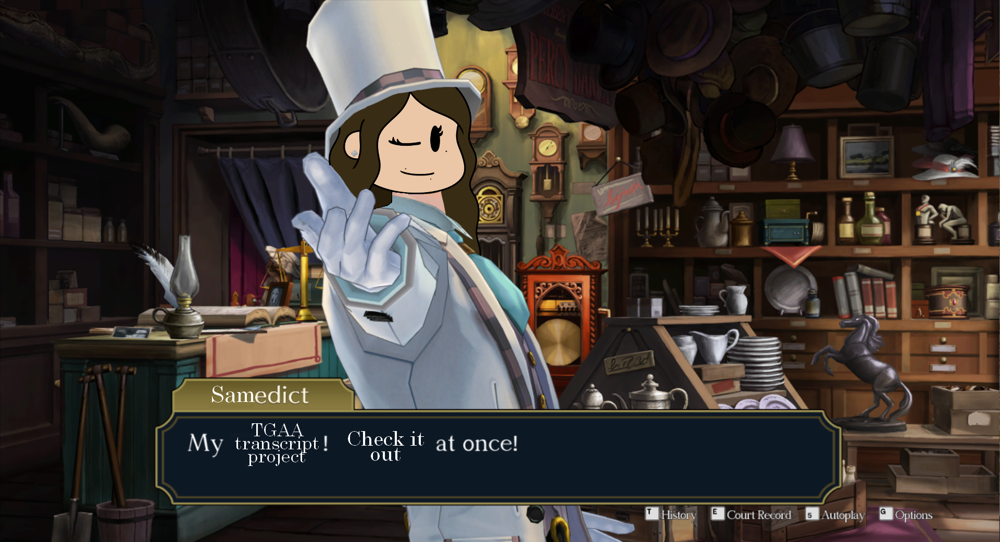

Welcome to the Ace Attorney Text Project, created and maintained by Steamed Sams! The intention of this site is to document text from the Ace Attorney series, with side-by-side comparisions of the original Japanese text and its localized English equivalent. That way, you get both the Japanese and English scripts- all in one place! Right now, this site contains the full English and Japanese transcripts of "The Great Ace Attorney Chronicles," but I may expand to other games if there's demand! Want to see how the text differs between languages? Want to study how your favorite character speaks in Japanese? Just want all of the text in the game in one place? This is the place for you!
All text is transcribed as-is. If there is a typo in the game, it will be marked with [sic]. However, if you believe I've made a mistake in my transcription, please let me know at here! I'm only one person, so mistakes are bound to happen.
These transcriptions are of the most recent version of the game. As such, if text differs in older versions of the game, will not be reflected here.
Use this site however you please (it's not my text, after all)! However, I would not recommend using this site to experience the game for the first time. If you haven't played the games, the official site contains plenty of information on how to purchase them for yourself!
Use the navagation bar to find the game you'd like to view, or to learn more about me, the person behind the project!
This site is not affiliated with Capcom. This is a purely fan-driven project.
